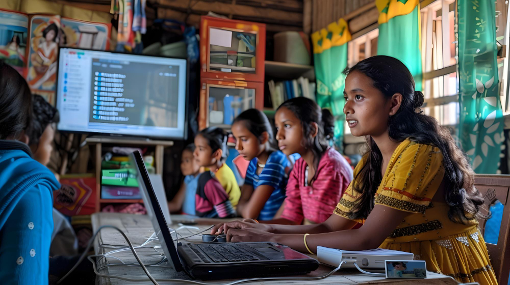

Loading...
Loading...
Focused initiatives that bridge rural talent to urban opportunities and long-term financial independence.
Each program is designed to solve a key barrier faced by rural students—education access, career readiness, and financial stability.
We provide scholarships, mentorship, and logistical support for rural students to study in urban schools and colleges.
Target Group: Children aged 7 – 22
Status: Ongoing
From computer literacy to communication skills, we organize workshops that prepare rural youth for modern careers.
Target Group: Youth aged 15 – 25
Status: Ongoing
We guide students on savings, entrepreneurship, and career planning to ensure long-term financial independence.
Target Group: College students from rural backgrounds
Status: Ongoing
Rural students are talented, but often blocked by lack of access, exposure, and financial awareness. Our programs address these three barriers step-by-step—education access, career readiness, and financial stability.
✅ Scholarships + urban guidance for better education
✅ Skills training to match modern job requirements
✅ Financial literacy for long-term independence

Your support can help a child study better, learn skills, and become financially independent.